Un lecteur pressé (un recruteur, un manager) lit la section 1 : elle tient en une page et donne le résultat. Un lecteur technique va directement à la section 5. Si un mot vous bloque, il est défini dans la section 2 ou dans le glossaire (annexe A).
Les encadrés ont toujours le même sens : vert pour ce qu'il faut retenir, orange pour un piège ou une limite, bleu pour une explication ou un choix.
La question posée : si un attaquant se comporte sur mes machines comme le font les vrais attaquants, est-ce que mon SIEM le voit, et est-ce qu'il le signale avec le bon niveau d'urgence ?
Ce qui a été fait : sur un lab isolé, j'ai rejoué 7 comportements d'attaquant connus, chacun référencé dans la matrice MITRE ATT&CK. Pour chacun, j'ai regardé ce que le SIEM Wazuh remontait, puis j'ai corrigé ce qui manquait et rejoué le test pour le prouver.
| # | Technique MITRE | Tactique | Avant correction | Après |
|---|---|---|---|---|
| 1 | T1136.001 Création d'un compte local | Persistence | Détecté (niv. 12) | Inchangé |
| 2 | T1053.005 Tâche planifiée | Persistence, Execution | Mal qualifié (niv. 3) | Règle 100100 (niv. 10) |
| 3 | T1547.001 Clé de registre Run | Persistence, Privilege Esc. | Détecté (niv. 6) | Inchangé |
| 4 | T1003.001 Mémoire de LSASS | Credential Access | Invisible au SIEM | Canal Defender collecté |
| 5 | T1070.001 Effacement des journaux | Defense Evasion | Détecté | Inchangé |
| L1 | T1110 Force brute SSH | Credential Access | Détecté | Inchangé |
| L2 | Création de compte vue par le FIM | Persistence | Détecté (niv. 7) | Inchangé |
Cette section explique le vocabulaire nécessaire pour lire la suite. Si vous connaissez déjà ces notions, passez à la section 3.
Un SOC (Security Operations Center) est l'équipe qui surveille en continu le système d'information d'une organisation pour repérer les attaques et y réagir. Son outil central est le SIEM. Monter un mini-SOC chez soi permet de faire ce que fait un analyste au quotidien : collecter des logs, lire des alertes, distinguer un vrai problème d'un faux positif, et améliorer les règles.
| Brique | Rôle, en une phrase | Analogie |
|---|---|---|
| SIEM (Wazuh) | Reçoit les logs de toutes les machines, les compare à des règles et lève des alertes. Il les stocke aussi hors de portée de l'attaquant. | La salle de vidéosurveillance d'un immeuble. |
| Agent | Petit programme installé sur chaque machine surveillée, qui lit les journaux locaux et les envoie au SIEM. | La caméra dans chaque couloir. |
| Sysmon | Outil gratuit de Microsoft qui ajoute à Windows des journaux très détaillés : chaque programme lancé, avec sa ligne de commande, son parent, ses empreintes. | Une caméra haute définition à la place d'une webcam. |
| MITRE ATT&CK | Catalogue public des comportements d'attaquants observés dans la réalité, rangés par tactique (le but) et technique (le moyen). | Le dictionnaire des modes opératoires des cambrioleurs. |
| Atomic Red Team | Bibliothèque de petits tests, chacun reproduisant une technique ATT&CK de façon contrôlée et réversible (option -Cleanup). | Un exercice d'alarme incendie : on simule pour vérifier que l'alarme sonne. |
Une CVE est une faille dans un logiciel précis (un bug qu'on corrige avec une mise à jour). Une technique ATT&CK est un comportement : créer un compte, planifier une tâche, effacer des journaux. Les tests de ce rapport n'exploitent aucune faille : ils utilisent des fonctions normales de Windows et de Linux, comme le ferait un attaquant déjà présent. C'est pour cela que la détection repose sur l'observation du comportement, pas sur un correctif.
Le chemin est toujours le même, et le comprendre explique la plupart des surprises rencontrées pendant les tests :
ossec.conf).Si une étape manque, rien n'apparaît, sans message d'erreur. Le test 4 (LSASS) est tombé dans le trou de l'étape 3 : l'événement existait sur le poste, mais l'agent ne lisait pas ce journal.
| Niveau | Sévérité affichée | Ce que ça veut dire pour l'analyste |
|---|---|---|
| 0 à 6 | Faible | Information, bruit de fond. On ne regarde pas une par une. |
| 7 à 11 | Moyenne | À examiner : changement notable (fichier système modifié, persistance probable). |
| 12 à 14 | Haute | À traiter vite : changement de privilèges, action de l'antivirus. |
| 15 | Critique | Urgence. |
Choisir un niveau est un compromis entre couverture et bruit : une règle large déclenchée cent fois par jour doit rester basse, sinon les analystes finissent par ignorer toutes les alertes. Une règle précise, donc rare, peut être plus haute.
Tout tourne sur un seul PC sous l'hyperviseur Proxmox. Les machines testées sont sur un réseau virtuel isolé (vmbr1, 10.10.10.0/24), séparé du réseau de la maison : elles sortent sur Internet par NAT, mais rien du réseau domestique ne peut les joindre directement.
| Machine | Rôle | Ce qu'elle apporte au test |
|---|---|---|
| wazuh | SIEM | Collecte, règles, alertes, dashboard, tags MITRE et PCI DSS |
| win11 | Poste de travail cible | Journal Security, Sysmon (config SwiftOnSecurity), Defender ; c'est là qu'Atomic Red Team joue l'attaquant |
| ubuntu-cible | Serveur Linux cible | Logs SSH via journald, contrôle d'intégrité des fichiers (FIM) sur /etc |
Comme le lab est isolé, on ne peut pas ouvrir le dashboard ou le Bureau à distance directement depuis le PC. On crée un tunnel SSH vers l'hôte Proxmox : un port local du PC (par exemple 13389) est relié, à travers SSH, au port 3389 de la VM Windows. Le client RDP se connecte alors à localhost:13389. Le nom de la machine Windows ne fonctionne pas, parce que le PC ne voit pas le réseau du lab : seul le tunnel y mène.
| Étape | Action | Question à laquelle elle répond |
|---|---|---|
| 1 | Choisir | Quelle technique ATT&CK, et pourquoi elle est réaliste pour cette machine ? |
| 2 | Émuler | Lancer le test Atomic correspondant, noter l'heure exacte. |
| 3 | Observer | Qu'est-ce qui a été journalisé sur le poste ? Qu'est-ce qui est arrivé dans le SIEM ? |
| 4 | Qualifier | L'alerte existe-t-elle, a-t-elle le bon niveau, le bon tag MITRE, assez de contexte pour un analyste ? |
| 5 | Corriger et rejouer | S'il y a un trou : règle ou collecte, puis on relance le même test pour prouver la correction. |
| 6 | Nettoyer | Remettre la machine dans son état initial (-Cleanup, suppression du compte de test). |
| Verdict | Signification |
|---|---|
| Détecté | Une alerte existe, avec un niveau et un contexte suffisants pour qu'un analyste réagisse. |
| Mal qualifié | Une alerte existe mais elle est noyée : niveau trop bas, titre générique, pas de lien avec la technique. |
| Non visible | Rien dans le SIEM, alors que l'action a bien eu lieu. |
| Corrigé | Le trou a été comblé et le test rejoué le prouve. |
Chaque test suit la même structure : le test lancé, ce que les logs voient, les alertes Wazuh, puis le verdict. Le badge à côté de chaque titre rappelle le verdict. Les captures sont celles du dashboard et des terminaux pendant les tests.
La VM Windows est sur le réseau isolé du lab : on n'y accède pas directement depuis le PC. On passe par un tunnel SSH via l'hôte Proxmox (ssh -L 13389:10.10.10.20:3389 pve), puis le client Bureau à distance se connecte à localhost:13389.
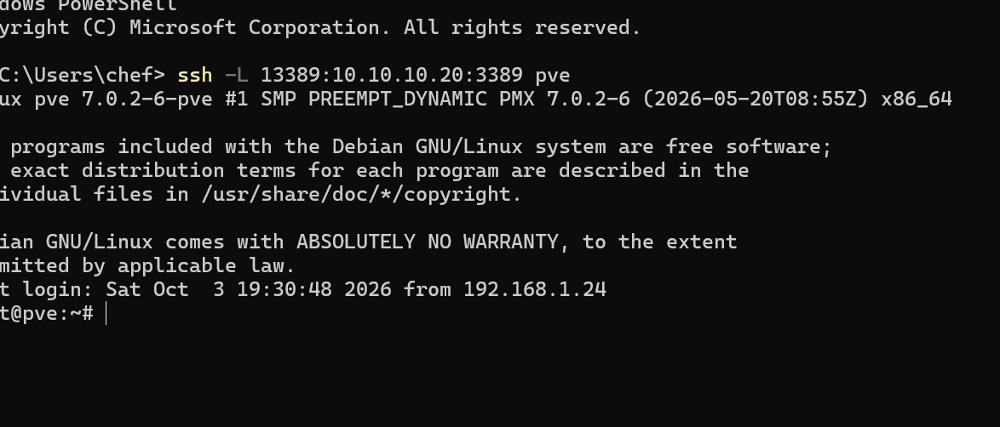
L'agent win11 est actif et remonte ses logs au manager.
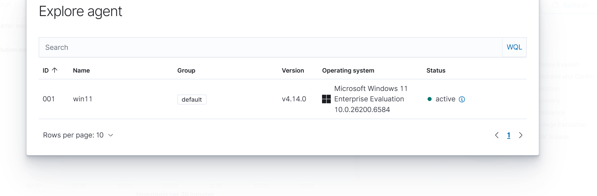
Sans aucune configuration, l'agent fait aussi un audit SCA contre le benchmark CIS Windows 11 (score de départ : 26 %) et de la détection de vulnérabilités sur les logiciels installés.
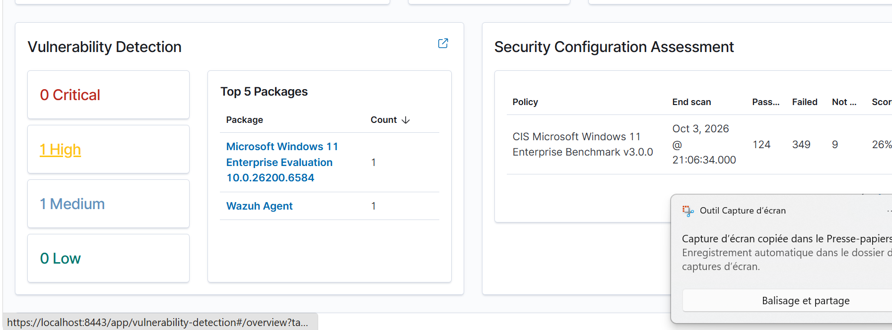
Premier exemple de bruit : à chaque ouverture, PowerShell crée un fichier __PSScriptPolicyTest_* dans Temp (Sysmon event 11). C'est un comportement bénin, candidat à une exclusion.
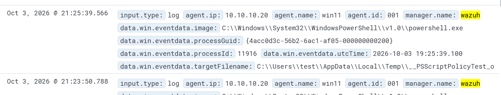
Vue d'ensemble en fin de session : les alertes sont classées par sévérité selon le niveau de la règle (0-6 faible, 7-11 moyen, 12-14 haut, 15+ critique), et les tactiques MITRE vues sur win11 apparaissent dans le panneau de l'agent.
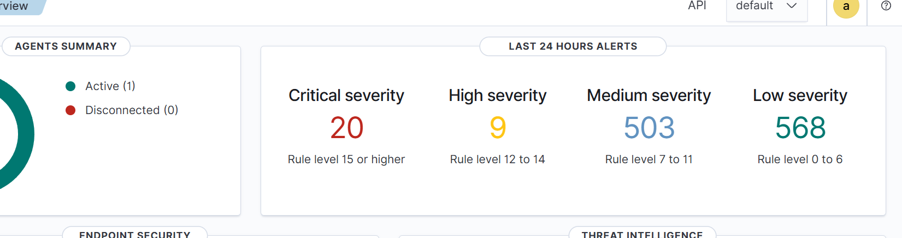
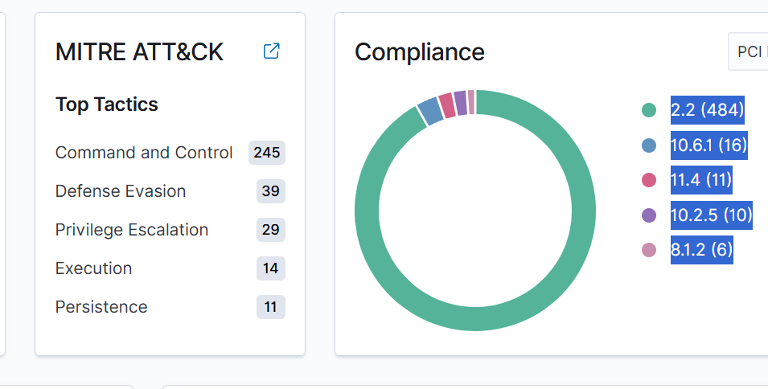
Test : Atomic T1136.001-8, qui lance net user /add puis net localgroup administrators /add. Côté attaquant, on liste d'abord les variantes disponibles (-ShowDetailsBrief) puis on lance la n°8 :
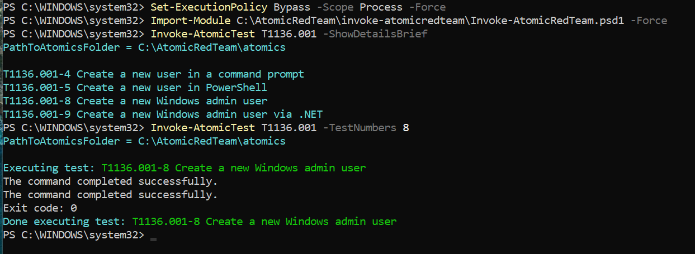
On vérifie sur le poste que le compte T1136.001_Admin existe bien (avant de le supprimer avec -Cleanup) :
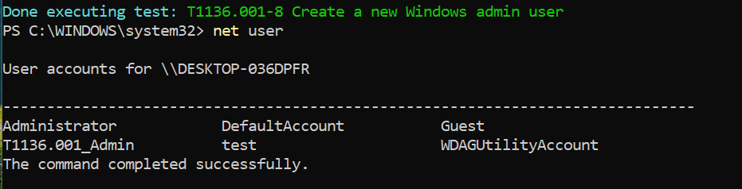
Ce que les logs voient :
net.exe lancé par cmd.exe.Alertes Wazuh : 3 alertes, dont une de niveau ≥ 12 (« Administrators Group Changed »). Elles sont rattachées à PCI DSS 10.2.5 et 8.1.2.
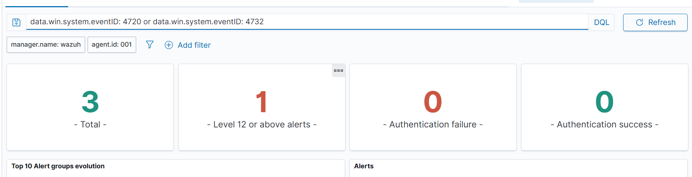
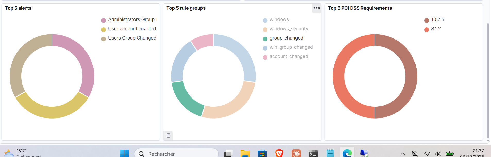
La commande elle-même est vue par Sysmon (« net.exe binary was started by a Windows cmd shell », groupe sysmon_eid1_detections) :
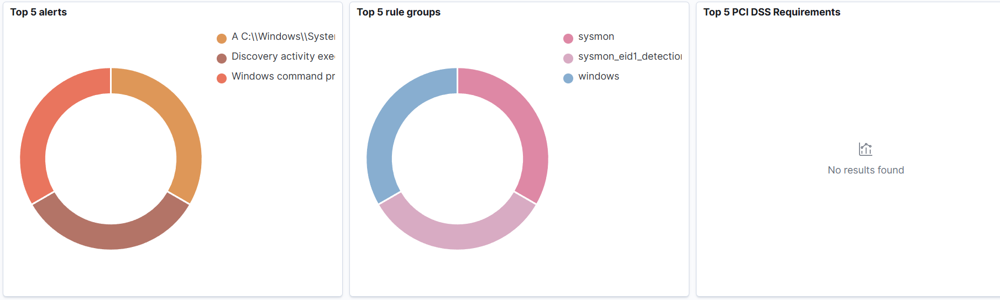
Détecté nativement, avec deux sources complémentaires. Le journal Security voit le résultat (compte, groupe), Sysmon voit la commande.
Test : Atomic T1053.005-2, qui lance SCHTASKS /Create /SC ONCE /TN spawn /TR cmd.exe. La tâche « spawn » est bien créée :
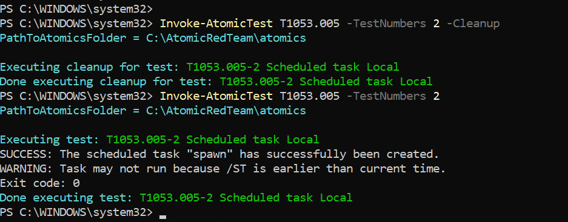
Ce que Sysmon voit (vérifié dans la VM avec Get-WinEvent) : event 1 schtasks.exe, avec la ligne de commande complète, le parent cmd.exe, le niveau d'intégrité High et les hashes.
La recherche commandLine: *schtasks* ne donnait rien, parce que la commande était en MAJUSCULES et que la recherche joker est sensible à la casse. Une recherche vide ne prouve pas l'absence d'un événement.
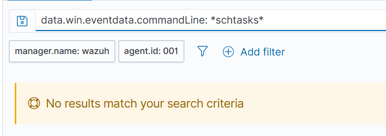
Avant : en cherchant sur image: *schtasks.exe, on ne trouve qu'une alerte générique, la règle 92032 « Suspicious Windows cmd shell execution », de niveau 3. Elle est noyée dans le bruit, et rien n'y indique une persistance.
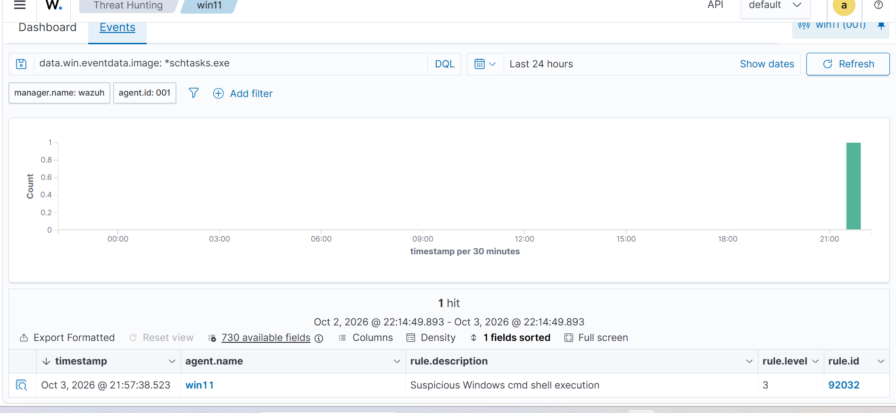
Correction : règle 100100, de niveau 10 avec le tag MITRE T1053.005. Elle se déclenche quand schtasks.exe est lancé avec /create, sans tenir compte de la casse ((?i)). Sa syntaxe a été validée avec wazuh-analysisd -t avant de redémarrer le manager.
Après : on rejoue le test. Dans le même tableau, on voit les deux exécutions : celle d'avant la règle (une seule ligne 92032 niveau 3) et celle d'après, où la règle 100100 niveau 10 apparaît en plus de la 92032, avec un titre explicite et le poste concerné. La nouvelle règle n'écrase rien, elle ajoute une alerte mieux qualifiée.
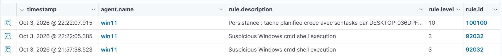
« cmd lance un programme » arrive des centaines de fois par jour : la monter créerait des faux positifs. On ajoute plutôt une règle plus précise, donc plus rare, qu'on peut mettre plus haut.
Test : Atomic T1547.001-1, un reg add dans ...\CurrentVersion\Run.
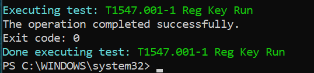
Alerte Wazuh : règle 92302, niveau 6, « Registry entry to be executed on next logon was modified using command line application reg.exe ». Elle porte le tag MITRE T1547.001 (Persistence, Privilege Escalation).
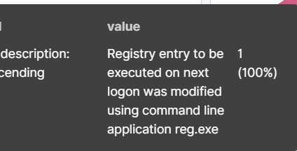
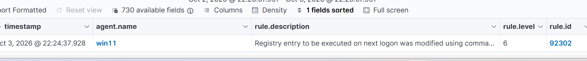
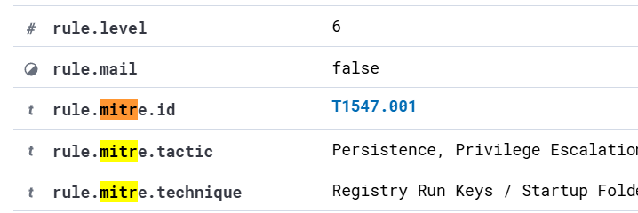
En cliquant sur l'ID MITRE dans Wazuh, on ouvre la fiche de la technique : sa description, et ici les chemins de registre et dossiers de démarrage que les attaquants utilisent.
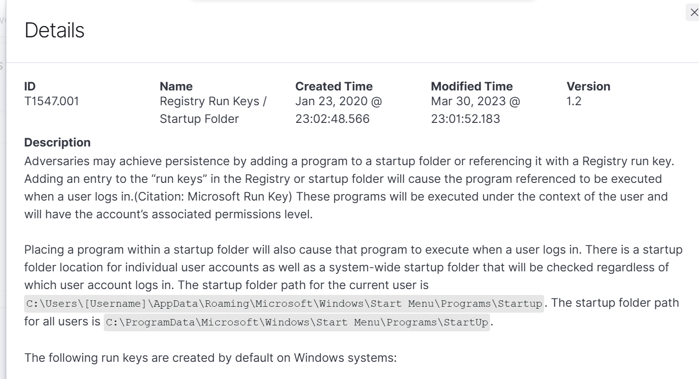
Détecté et bien qualifié nativement. Pas besoin de règle perso : on ne complète que là où la détection native est insuffisante.
Test : parmi les 14 variantes Atomic de T1003.001 (ProcDump, Mimikatz, NanoDump…), on a choisi la n°2, qui n'a besoin d'aucun outil externe.
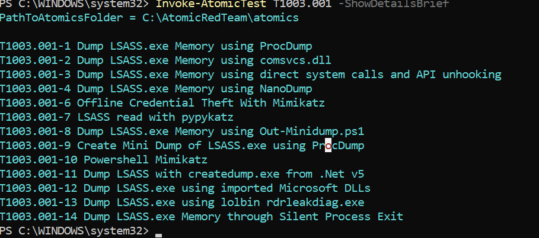
Atomic T1003.001-2, qui lance rundll32.exe comsvcs.dll, MiniDump <PID lsass> lsass.dmp full. Il s'agit d'un LOLBin : une DLL signée Microsoft détournée.
Ce qui s'est passé : « Access is denied ». Defender a bloqué la commande et l'a journalisée dans son propre canal : événement 1116 (Trojan:Win32/RundllLolBin.AF, Severe) puis 1117 (action Remove).
Rien dans Wazuh. L'agent ne collectait pas le canal Microsoft-Windows-Windows Defender/Operational.
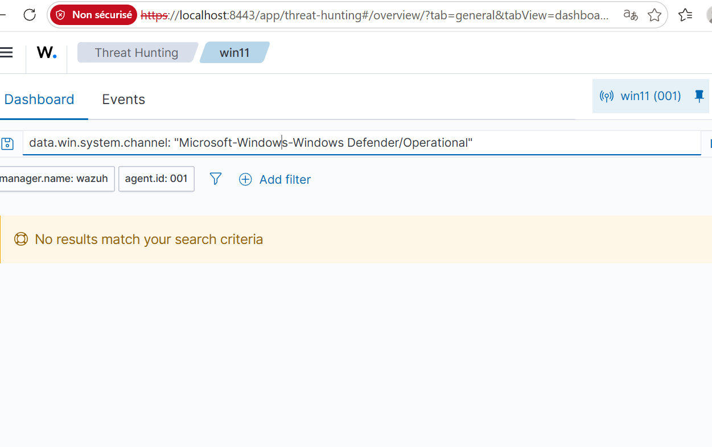
Correction : ajout du canal dans ossec.conf de l'agent (<localfile> en eventchannel), puis on rejoue le test.
Après : 2 alertes, la détection et l'action, dont une de niveau ≥ 12.
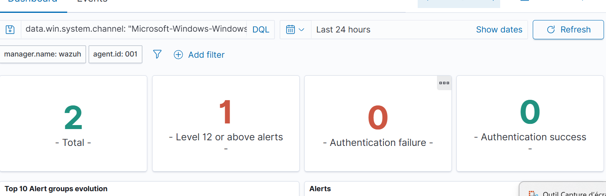
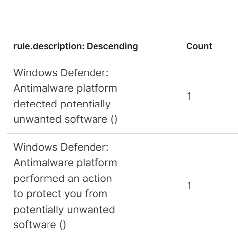
Une prévention doit aussi remonter au SOC. Une tentative bloquée veut dire qu'un attaquant est déjà sur le poste. Limites restantes : la description Wazuh n'affiche pas le nom de la menace (« () »), et la config SwiftOnSecurity ne journalise pas l'event Sysmon 10 (accès à LSASS).
Test : wevtutil cl Security, lancé à la main parce que le fichier YAML Atomic manquait dans le téléchargement.
Alerte Wazuh : « The audit log was cleared » (événement 1102).
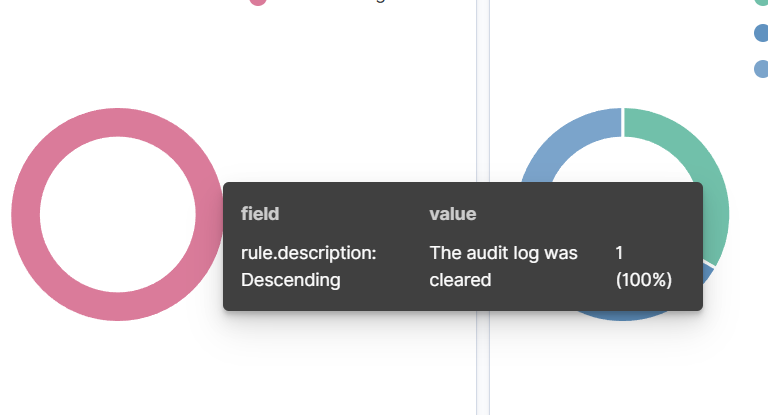
Effacer les journaux sur le poste n'efface pas ce que le SIEM a déjà reçu. C'est une des raisons d'être d'un SIEM : centraliser les logs hors de portée de l'attaquant.
Wazuh a signalé « Successful Remote Logon… NTLM authentication, possible pass-the-hash attack ». L'enquête montre que l'IP source est 10.10.10.1 (le bastion Proxmox, via le tunnel SSH), que le poste source est le mien, et que l'heure correspond à ma connexion RDP. C'est donc une activité d'administration légitime. En production, on documenterait l'exception ou on ajusterait la règle pour les IP d'administration connues.
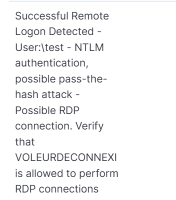
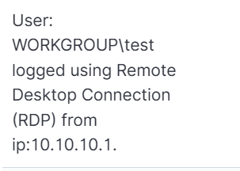
ubuntu-cible L'agent 002 est actif. Il lance tout seul l'audit SCA CIS Ubuntu 24.04 et lit journald (sshd, sudo).
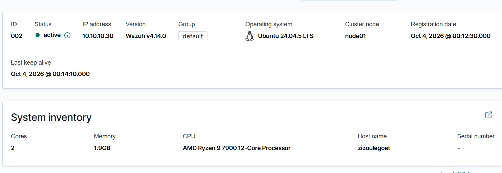
Test : 10 connexions SSH avec des utilisateurs inexistants (pirate1 à pirate10).
Résultat : une alerte sshd par tentative. Le panneau MITRE de l'agent affiche Credential Access : 10.
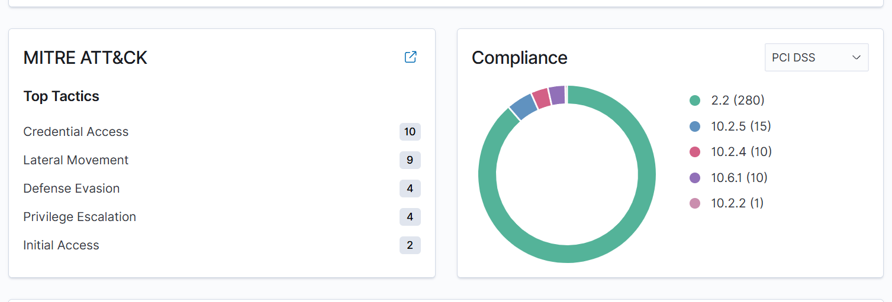
Configuration : par défaut, l'agent scanne /etc toutes les 12 heures. On le passe en realtime="yes" avec report_changes="yes".
Test : useradd -m backdoor, puis userdel -r backdoor pour nettoyer.
Résultat : règle 550 « Integrity checksum changed », niveau 7, 12 fois (passwd, shadow, group, gshadow, subuid, subgid et leurs sauvegardes -). S'y ajoutent « File added / deleted » pour les fichiers temporaires et les verrous. Chaque alerte donne le fichier, la taille, la date de modification et les hashes avant et après.
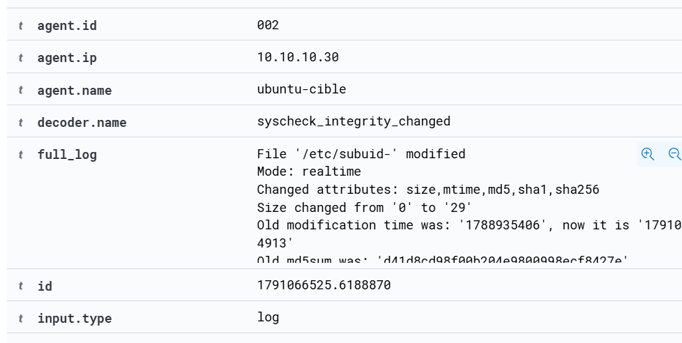
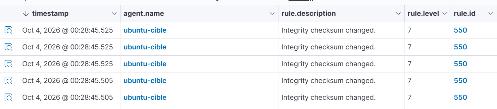
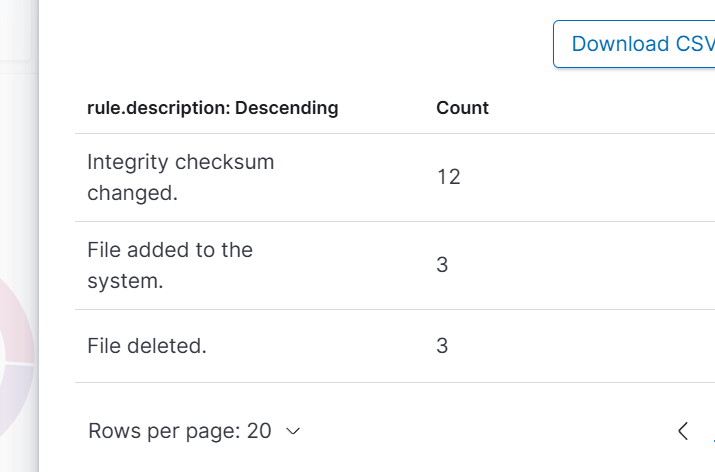
Le temps réel est plus réactif, mais il coûte plus de ressources et génère plus de bruit qu'un scan périodique.
| Constat | Leçon |
|---|---|
| 5 tests sur 7 détectés sans rien modifier | Mesurer la détection native avant d'écrire des règles. On ne complète que là où il y a un trou, sinon on multiplie les alertes en double. |
| Tâche planifiée vue en niveau 3 seulement | Une détection peut exister et être inutile en pratique si son niveau la noie dans le bruit. La bonne correction est une règle plus précise, pas une règle générique remontée. |
| Blocage par Defender invisible pour le SIEM | Toute source de sécurité doit remonter au SOC, y compris les préventions réussies : une tentative bloquée signifie que quelqu'un est déjà sur le poste. |
| Recherches vides alors que l'événement existait | Avant de conclure « non détecté », vérifier la casse, les filtres restés actifs, la période, et se rappeler que seuls les événements qui déclenchent une règle sont indexés. |
| Journaux effacés sur le poste mais conservés dans le SIEM | C'est la raison d'être d'un SIEM : garder une copie des logs hors de portée de l'attaquant. |
| Alerte « pass-the-hash » sur ma propre connexion RDP | Un analyste qualifie avant d'escalader : IP source, poste, heure, contexte. Un faux positif connu se documente ou s'exclut précisément. |
| Étape | Ce qu'elle apporte |
|---|---|
| Suricata sur un Raspberry Pi 5 | Détection réseau (IDS) : scans, connexions vers des destinations suspectes. Alertes envoyées à Wazuh. |
| Pare-feu OPNsense et VLAN | Segmenter le lab (administration, serveurs, cibles) et envoyer les logs du pare-feu au SIEM. |
| Sysmon : activer l'événement 10 sur LSASS | Voir les tentatives d'accès à la mémoire des identifiants même sans antivirus. |
| Automatisation (Ansible, Terraform) | Reconstruire le lab et redéployer les règles en une commande, et rejouer les tests automatiquement. |
| Terme | Définition |
|---|---|
| Agent | Programme installé sur une machine pour envoyer ses journaux au SIEM. |
| Alerte | Événement qui a déclenché une règle du SIEM ; elle porte un niveau, une description et souvent un tag MITRE. |
| Atomic Red Team | Bibliothèque open source de tests qui reproduisent chacun une technique ATT&CK. |
| CVE | Identifiant public d'une vulnérabilité logicielle précise. |
| Décodeur | Partie du SIEM qui découpe un log brut en champs exploitables. |
| Faux positif | Alerte levée sur une activité légitime. |
| FIM | File Integrity Monitoring : surveillance des modifications de fichiers sensibles par comparaison d'empreintes (hash). |
| Hash | Empreinte numérique d'un fichier ; si un octet change, l'empreinte change. |
| LOLBin | « Living off the land binary » : programme légitime du système détourné par un attaquant pour ne pas apporter ses propres outils. |
| LSASS | Processus Windows qui gère l'authentification ; sa mémoire contient des secrets d'identification, d'où l'intérêt des attaquants. |
| MITRE ATT&CK | Base de connaissances des tactiques et techniques d'attaquants observées dans la réalité. |
| Niveau (Wazuh) | Gravité d'une règle, de 0 à 15. |
| PCI DSS | Norme de sécurité des données de cartes bancaires ; Wazuh rattache certaines alertes à ses exigences. |
| Purple team | Exercice où l'on joue à la fois l'attaque (red) et la défense (blue) pour améliorer la détection. |
| SCA | Security Configuration Assessment : audit de configuration d'une machine par rapport à un référentiel (ici CIS). |
| SIEM | Security Information and Event Management : outil qui centralise les logs et lève des alertes. |
| Sysmon | Outil Microsoft qui ajoute des journaux détaillés à Windows (processus, fichiers, registre, réseau). |
| Tactique / technique | Dans ATT&CK, la tactique est le but de l'attaquant (persister, voler des identifiants) ; la technique est le moyen. |
Fichier rules/local_rules.xml sur le manager Wazuh. Les règles personnalisées utilisent les identifiants à partir de 100000 pour ne jamais entrer en conflit avec celles livrées par Wazuh.
<group name="local,sysmon,persistence,"> <rule id="100100" level="10"> <if_sid>61603, 92032</if_sid> <field name="win.eventdata.image" type="pcre2">(?i)schtasks\.exe$</field> <field name="win.eventdata.commandLine" type="pcre2">(?i)/create</field> <description>Persistance : tache planifiee creee avec schtasks par $(win.eventdata.user)</description> <mitre><id>T1053.005</id></mitre> </rule> </group>
| Élément | Rôle |
|---|---|
group name | Étiquettes qui permettent de filtrer ces alertes dans le dashboard. |
id="100100" level="10" | Identifiant unique de la règle, et niveau 10 : sévérité moyenne haute, au-dessus du bruit. |
if_sid | La règle n'est évaluée que si l'événement a déjà déclenché la règle 61603 (création de processus Sysmon) ou 92032 (programme lancé par cmd). C'est un raffinement de règles existantes. |
field … image | Le programme lancé doit être schtasks.exe. (?i) rend la comparaison insensible à la casse, $ impose la fin du chemin. |
field … commandLine | La commande doit contenir /create : on ne veut que les créations de tâche, pas les simples consultations. |
description | Titre lisible de l'alerte ; $(win.eventdata.user) y insère l'utilisateur concerné. |
mitre | Rattache l'alerte à la technique T1053.005 pour les tableaux de bord MITRE. |
Avant de redémarrer le manager, la syntaxe a été vérifiée avec l'outil de test de Wazuh (wazuh-analysisd -t). Une erreur dans ce fichier empêche le manager de démarrer, et donc coupe toute la détection.
Ce document suit la structure classique d'un rapport technique d'exercice. Pour un nouvel exercice (TP, audit, autre lab), garder le même squelette :
| Partie | Ce qu'on y met | Lecteur visé |
|---|---|---|
| Page de garde | Titre, auteur, date, version, périmètre, niveau de diffusion | Tous |
| Résumé | La question posée, ce qui a été fait, les chiffres clés, le tableau des résultats, 3 messages à retenir. Une page maximum. | Manager, recruteur |
| Contexte et notions | Le vocabulaire nécessaire pour comprendre la suite | Débutant |
| Périmètre et architecture | Les machines, le réseau, un schéma, ce qui est hors périmètre | Technique |
| Méthodologie | Les étapes suivies, la grille de verdict, les règles du jeu (autorisations, nettoyage) | Technique, auditeur |
| Résultats détaillés | Une fiche par test, toujours dans le même ordre : action, observation, preuve (capture), verdict | Technique |
| Leçons et recommandations | Ce qu'on a appris, ce qu'on conseille de faire | Tous |
| Limites et suite | Ce que le test ne prouve pas, et ce qui vient après. Être honnête ici rend le reste crédible. | Tous |
| Annexes | Glossaire, code, configurations, détails trop longs pour le corps | Technique |
Les sources de ce document (HTML, CSS, script de génération) sont dans le dossier rapport/ du dépôt : modifier detections/README.md puis relancer python3 build.py régénère le PDF.